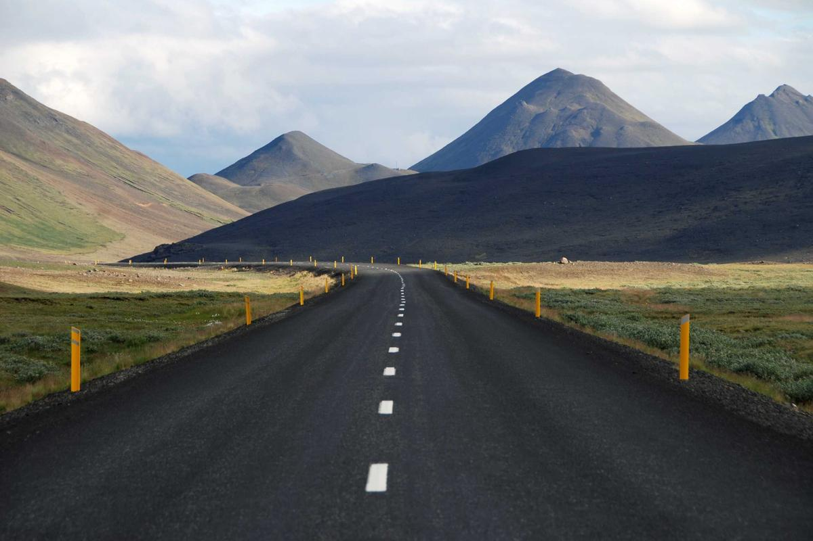

About
Cambodian researcher, policy advisor and educator with two decades of experience in climate change, drought and disaster risk management, water resources, biodiversity, and environmental policy. Extensive track record in national policy development — including NBSAP alignment with the Kunming–Montreal Global Biodiversity Framework, Cambodia's NDC 3.0, the National Climate Report, and strategic frameworks for parliamentarians and line ministries. Lecturer at the Royal University of Phnom Penh since 2007, granted the title of Professor by Royal Decree in 2023. National leader on international research and consultancy projects with UNDP, GIZ, USAID, IDRC, ADPC, FAO, UNFPA, ASEAN, and partner universities across Asia, Australia, Europe, and North America.
Policy Development & Advisory
- NBSAP & Biodiversity Finance — Led alignment of Cambodia's National Biodiversity Strategy and Action Plan with the Kunming–Montreal Global Biodiversity Framework; oversaw updates to the Biodiversity Finance Needs Assessment and Finance Plan under GBF Early Action Support / BIOFIN (MoE, 2024–2025).
- NDC 3.0 — Livelihood & Ecosystem Sector — Reviewed policies, mapped stakeholders, and revised sectoral targets aligned with Cambodia's updated Nationally Determined Contributions (UNDP, 2025).
- Cambodia National Climate Report — Technical Advisor contributing to chapters 1 and 3 of Cambodia's national reporting (MoE, 2024–2025).
- Biodiversity & Land-Use Planning Guideline — Revised the national Guideline for Integration of Biodiversity and Natural Resources into Land-Use Master Plans (MoE, 2025).
- CSFAP for ICPD25 Commitments — Developed Cambodia's Strategic Framework and Action Plan 2023–2030 for implementing ICPD25 commitments (UNFPA, 2023).
- Handbook for Parliamentarians on Climate Change — Authored a handbook and delivered training for Cambodian MPs on climate legislation (UNDP/CCCA, 2022).
- Urban Emergency Preparedness — Drafted the Phnom Penh Emergency Preparedness & Response Plan and contingency plans for Phnom Penh, Siem Reap and Kampot (PPCA / ADPC, 2021, 2024).
- ASCC Workplan Mid-term Review — Co-led the mid-term review of ASEAN Socio-Cultural Community Workplan 2016–2020 (MoEYS / DIIA, 2020–2021).
Education
Graduate Certificate in Environmental Management and Development
Master of Environmental Management
Diploma of Mining and Industry
Awards
- Professor by Royal University of Phnom Penh, Royal Decree — 2023
- Royal Geographical Society of South Australia, John Lewis Silver Medal — 2016
- PhD grants award by the Ministry of Education, Youth and Sport, Cambodia — 2012
- Master's Degree award by the Australian Government (ADS) — 2005
Current Research & Consultancy
Country Leader — Urban Heat Resilience: Bridging Science, Policy, and Sustainable Design in Thailand, Cambodia and Vietnam
- Co-design research proposal; country data collection, analysis and report writing.
- Interface with policy makers to influence urban design for resilience.
Country Co-Lead — Build4People: Urban Climate
- Co-design research project during inception phase, focusing on geospatial data.
- Collect data for urban climate analysis in Phnom Penh.
- Provide model inputs and feedback on model performance for sustainable urban living.
Selected Past Research & Consultancy
National Consultant — NDC 3.0, Livelihood & Ecosystem Sector
National Consultant — Inclusive Disaster Risk Management in Phnom Penh (Heatwaves)
National Consultant — Integrated Natural Resources Management (INRM)
National Consultant — Early Action Support Project (GBF / BIOFIN)
Technical Advisor — Cambodia National Climate Report
National Team Leader — Contingency Disaster Plans for Phnom Penh, Siem Reap & Kampot
Co-Investigator — A River in Transition (Food environments in the Lower Mekong)
National Consultant — Cambodia Strategic Framework & Action Plan for ICPD25
Country Leader — Social Entrepreneurship in Disaster Risk Reduction (Drought)
Country Leader — REDD+ Feasibility Studies, Virachey National Park
National Consultant — Cambodia Drought Study
Co-Researcher — Climate change impact on rice yield and food security (PEER)
Additional projects with DCA, Save the Children, Child Fund, Life with Dignity, MoE/NCDD, MoEYS/ERC, APN, SUMERNET, FAO/SEARCA, EEPSEA and others (2007–2022). Full list available on request.
Teaching & Coordination
Lecturer — Royal University of Phnom Penh
- Introduction to Climate Change; Climate Change & Disaster Risk Reduction.
- Geographical Information Systems (for Disaster Management).
- Quantitative & Qualitative Research Methods.
- Critical Thinking in Development Issues; Environmental Economics; Environmental Ethics.
- Coordinate research projects and Faculty of Development Studies administration.
Division Chief, Research & Publication — Education Research Council
Officer — Department of Environment, Kampot Province
Selected Publications
- Downs, S. M., Staromiejska, W., Bakshi, N., Sok, S., Chhinh, N., et al. (2025). The Food Environment Toolbox. Current Developments in Nutrition, 9(5), 107444.
- Chhinh, N., Rath, S., & Choeun, K. (2024). Alteration of Flood Peak Discharge by Land Cover Change in Prek Thnot Watershed. Cambodia Journal of Basic and Applied Research, 5(2).
- Chhinh, N., Sok, S., Sou, V., & Nguonphan, P. (2023). Roles of Agricultural Cooperatives in Drought Risk Management. Water, 15(8), 1447.
- Chhinh, N., Sok, S., Sou, V., & Nguonphan, P. (2022). Local Engagement in Agricultural Cooperatives Operation in Cambodia. Sustainability, 14(24), 16515.
- Sok, S., Chhinh, N., Hor, S., & Nguonphan, P. (2021). Climate Change Impacts on Rice Cultivation: Tonle Sap vs Mekong River. Sustainability, 13(16), 8979.
- Sok, S., Wang, F., & Chhinh, N. (2021). Political participation and small-scale fishery management in the Tonlé Sap. International Journal of Water Resources Development.
- Chhinh, N., & Millington, A. (2015). Drought monitoring for rice production in Cambodia. Climate, 3(4), 792–811.
- Chhinh, N., Cheb, H., Chea, B., & Heng, N. (2014). Drought Risk in Cambodia: Assessing Costs and a Potential Solution. Asian Journal of Agriculture and Development, 11(2).
- Chhinh, N. (2014). Climate change adaptation in agriculture in Cambodia. In S. Vachani (Ed.). London: Edward Elgar.
- Chhinh, N., & Lawn, P. (2007). The Sustainable Net Domestic Product of Cambodia, 1988–2004. International Journal of Environment, Workplace, and Employment, 3(2).
Author/co-author of 30+ peer-reviewed articles, book chapters, monographs and training handbooks. Full list available on request.
Training & Capacity Building
Trainer of trainers on drought preparedness, response, recovery and mitigation. Topics include:
- GIS for disaster risk management; GIS for flood and drought mapping.
- Climate science concepts; drought concepts and practices.
- Drought severity assessment tools; drought planning with practical case studies.
Software & Skills
- GIS (ESRI)
- QGIS
- GRASS GIS
- HEC-HMS
- SWAT
- ENVI
- SPSS
- STATA
Fieldwork
Selected landscapes from research and consultancy sites across Cambodia.


Placeholder images — to be replaced with personal fieldwork photos.
References
Available on request.